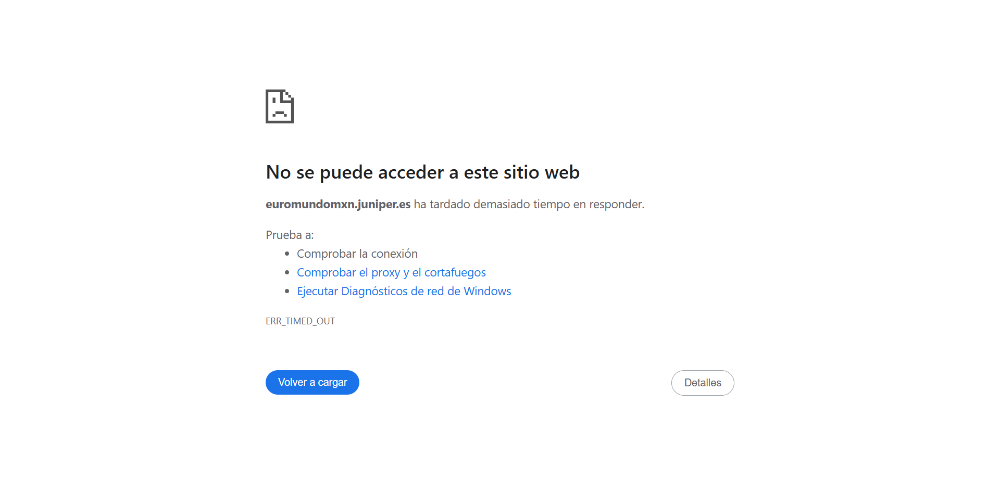
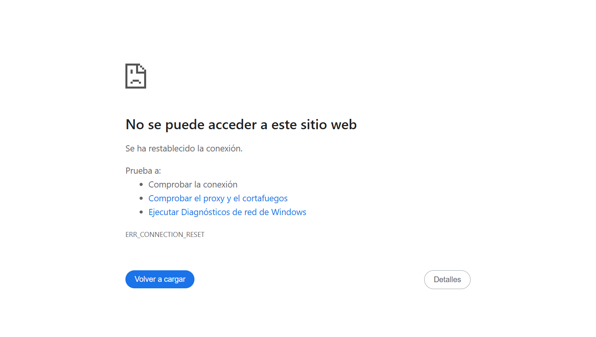
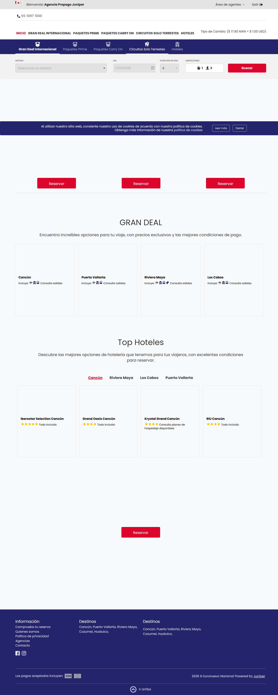
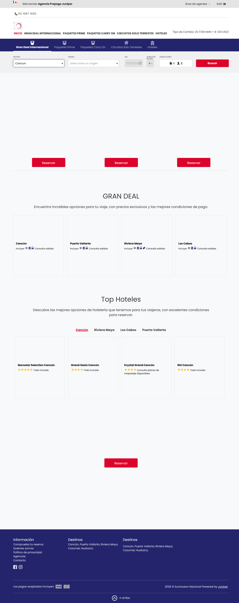
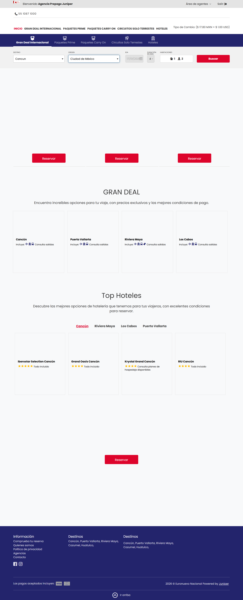
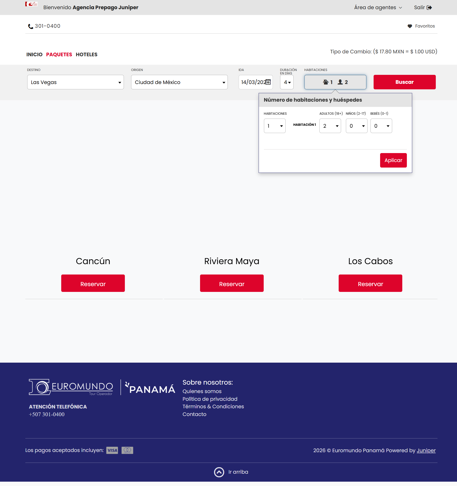
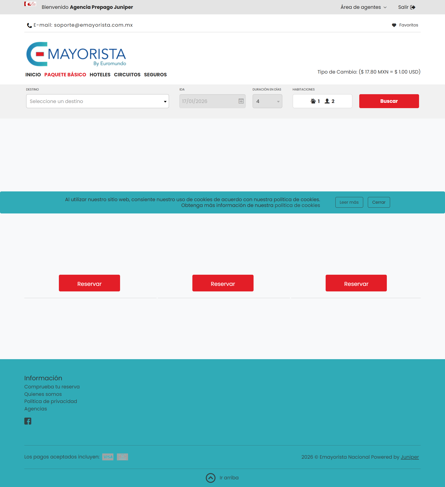
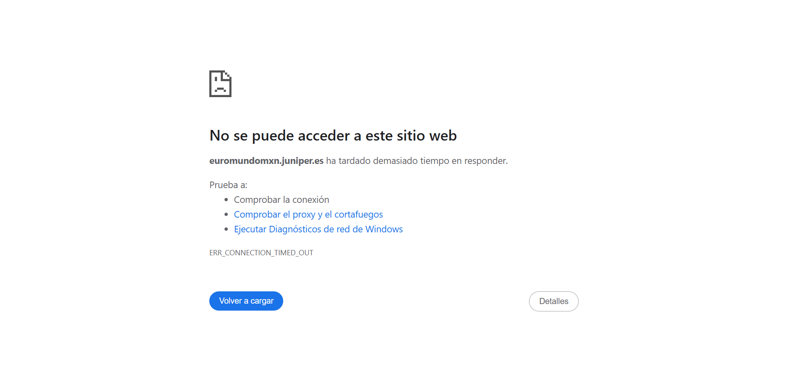
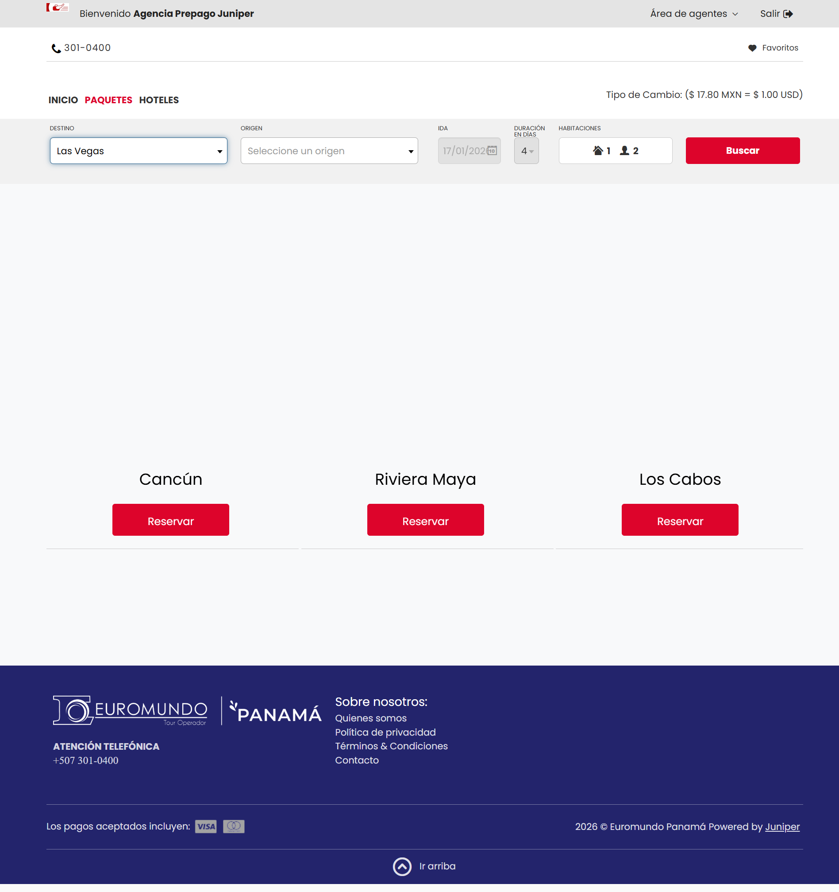

📘 PMO Report - All Executed Scenarios
🕓 Execution Date: 2026-01-16 13:56:02
📦 Release: 6.26.116.10
⏱️ Execution Duration: 01:35:56
14
Executed Scenarios
Test Results
Success Rate
0.0%
Mostrando todos los resultados
🕓 Execution Date: 2026-01-16 13:56:02
📦 Release: 6.26.116.10
⏱️ Execution Duration: 01:35:56
Mostrando todos los resultados
🧩 Scenario: circuitos_reserva_inter_con_cambio_de_hotel
🔗 Booking: No booking
📊 Status: ⚠️ FAILED
⚠️ Failure reason: Test Cases/Euromundo/Circuitos/circuitos_reserva_inter_con_cambio_de_hotel FAILED. Reason: com.kms.katalon.core.exception.StepFailedException: Call Test Case 'Test Cases/Euromundo/Login/Login_otn' failed at com.kms.katalon.core.keyword.builtin.Call... View more
TestCaseKeyword$_callTestCase_closure1.doCall(CallTestCaseKeyword.groovy:63) at com.kms.katalon.core.keyword.builtin.CallTestCaseKeyword$_callTestCase_closure1.call(CallTestCaseKeyword.groovy) at com.kms.katalon.core.keyword.internal.KeywordMain.runKeyword(KeywordMain.groovy:75) at com.kms.katalon.core.keyword.builtin.CallTestCaseKeyword.callTestCase(CallTestCaseKeyword.groovy:81) at com.kms.katalon.core.keyword.builtin.CallTestCaseKeyword.execute(CallTestCaseKeyword.groovy:44) at com.kms.katalon.core.keyword.internal.KeywordExecutor.executeKeywordForPlatform(KeywordExecutor.groovy:79) at com.kms.katalon.core.keyword.BuiltinKeywords.callTestCase(BuiltinKeywords.groovy:310) at java.base/jdk.internal.reflect.NativeMethodAccessorImpl.invoke0(Native Method) at java.base/jdk.internal.reflect.NativeMethodAccessorImpl.invoke(NativeMethodAccessorImpl.java:77) at java.base/jdk.internal.reflect.DelegatingMethodAccessorImpl.invoke(DelegatingMethodAccessorImpl.java:43) at circuitos_reserva_inter_con_cambio_de_hotel.run(circuitos_reserva_inter_con_cambio_de_hotel:39) at com.kms.katalon.core.main.ScriptEngine.run(ScriptEngine.java:194) at com.kms.katalon.core.main.ScriptEngine.runScriptAsRawText(ScriptEngine.java:119) at com.kms.katalon.core.main.TestCaseExecutor.runScript(TestCaseExecutor.java:486) at com.kms.katalon.core.main.TestCaseExecutor.doExecute(TestCaseExecutor.java:477) at com.kms.katalon.core.main.TestCaseExecutor.processExecutionPhase(TestCaseExecutor.java:456) at com.kms.katalon.core.main.TestCaseExecutor.accessMainPhase(TestCaseExecutor.java:448) at com.kms.katalon.core.main.TestCaseExecutor.execute(TestCaseExecutor.java:322) at com.kms.katalon.core.common.CommonExecutor.accessTestCaseMainPhase(CommonExecutor.java:71) at com.kms.katalon.core.main.TestSuiteExecutor.accessTestSuiteMainPhase(TestSuiteExecutor.java:145) at com.kms.katalon.core.main.TestSuiteExecutor.execute(TestSuiteExecutor.java:104) at com.kms.katalon.core.main.TestCaseMain.startTestSuite(TestCaseMain.java:205) at TempTestSuite1768583926119.run(TempTestSuite1768583926119.groovy:35) at java.base/jdk.internal.reflect.NativeMethodAccessorImpl.invoke0(Native Method) at java.base/jdk.internal.reflect.NativeMethodAccessorImpl.invoke(NativeMethodAccessorImpl.java:77) at java.base/jdk.internal.reflect.DelegatingMethodAccessorImpl.invoke(DelegatingMethodAccessorImpl.java:43) Caused by: com.kms.katalon.core.exception.StepFailedException: Unable to open browser with url: 'https://euromundootn.juniper.es' at com.kms.katalon.core.webui.keyword.internal.WebUIKeywordMain.stepFailed(WebUIKeywordMain.groovy:175) at com.kms.katalon.core.webui.keyword.internal.WebUIKeywordMain.runKeyword(WebUIKeywordMain.groovy:49) at com.kms.katalon.core.webui.keyword.builtin.OpenBrowserKeyword.openBrowser(OpenBrowserKeyword.groovy:55) at com.kms.katalon.core.webui.keyword.builtin.OpenBrowserKeyword.execute(OpenBrowserKeyword.groovy:37) at com.kms.katalon.core.keyword.internal.KeywordExecutor.executeKeywordForPlatform(KeywordExecutor.groovy:79) at com.kms.katalon.core.webui.keyword.WebUiBuiltInKeywords.openBrowser(WebUiBuiltInKeywords.groovy:62) at Login_otn.run(Login_otn:23) at com.kms.katalon.core.main.ScriptEngine.run(ScriptEngine.java:194) at com.kms.katalon.core.main.ScriptEngine.runScriptAsRawText(ScriptEngine.java:119) at com.kms.katalon.core.main.TestCaseExecutor.runScript(TestCaseExecutor.java:486) at com.kms.katalon.core.main.TestCaseExecutor.doExecute(TestCaseExecutor.java:477) at com.kms.katalon.core.main.TestCaseExecutor.processExecutionPhase(TestCaseExecutor.java:456) at com.kms.katalon.core.main.TestCaseExecutor.accessMainPhase(TestCaseExecutor.java:448) at com.kms.katalon.core.main.TestCaseExecutor.execute(TestCaseExecutor.java:322) at com.kms.katalon.core.main.TestCaseMain.runTestCase(TestCaseMain.java:151) at com.kms.katalon.core.keyword.builtin.CallTestCaseKeyword$_callTestCase_closure1.doCall(CallTestCaseKeyword.groovy:59) ... 25 more Caused by: org.openqa.selenium.TimeoutException: java.net.http.HttpTimeoutException: request timed out Build info: version: '4.28.1', revision: '73f5ad48a2' System info: os.name: 'Windows 11', os.arch: 'amd64', os.version: '10.0', java.version: '17.0.14' Driver info: com.kms.katalon.selenium.driver.CChromeDriver Command: [bf54181194f9cb194e3ce05f48d1d880, get {url=https://euromundootn.juniper.es}] Capabilities {acceptInsecureCerts: false, browserName: chrome, browserVersion: 143.0.7499.193, chrome: {chromedriverVersion: 143.0.7499.169 (164b20aab62..., userDataDir: C:\Users\JOHANA~1.GOM\AppDa...}, fedcm:accounts: true, goog:chromeOptions: {debuggerAddress: localhost:57834}, goog:processID: 31960, networkConnectionEnabled: false, pageLoadStrategy: normal, platformName: windows, proxy: Proxy(), se:cdp: ws://localhost:57834/devtoo..., se:cdpVersion: 143.0.7499.193, setWindowRect: true, strictFileInteractability: false, timeouts: {implicit: 0, pageLoad: 300000, script: 30000}, unhandledPromptBehavior: {alert: ignore, beforeUnload: ignore, confirm: ignore, default: ignore, file: ignore, prompt: ignore}, webSocketUrl: ws://localhost:36942/sessio..., webauthn:extension:credBlob: true, webauthn:extension:largeBlob: true, webauthn:extension:minPinLength: true, webauthn:extension:prf: true, webauthn:virtualAuthenticators: true} Session ID: bf54181194f9cb194e3ce05f48d1d880 at org.openqa.selenium.remote.http.jdk.JdkHttpClient.execute0(JdkHttpClient.java:495) at org.openqa.selenium.remote.http.AddSeleniumUserAgent.lambda$apply$0(AddSeleniumUserAgent.java:42) at org.openqa.selenium.remote.http.Filter.lambda$andFinally$1(Filter.java:55) at org.openqa.selenium.remote.http.jdk.JdkHttpClient.lambda$executeAsync$1(JdkHttpClient.java:384) Caused by: java.net.http.HttpTimeoutException: request timed out at java.net.http/jdk.internal.net.http.HttpClientImpl.send(HttpClientImpl.java:572) at java.net.http/jdk.internal.net.http.HttpClientFacade.send(HttpClientFacade.java:123) at org.openqa.selenium.remote.http.jdk.JdkHttpClient.execute0(JdkHttpClient.java:456) ... 3 more
🖼️ Evidence:

🧩 Scenario: gd_reserva_inter_vuelo_con_aerobus
🔗 Booking: No booking
📊 Status: ⚠️ FAILED
⚠️ Failure reason: Test Cases/Euromundo/Gran_Deal/gd_reserva_inter_vuelo_con_aerobus FAILED. Reason: com.kms.katalon.core.exception.StepFailedException: Unable to click on object 'Object Repository/Euromundo/book_steps/button_edit' at com.kms.katalon.core.webui.keywo... View more
rd.internal.WebUIKeywordMain.stepFailed(WebUIKeywordMain.groovy:175) at com.kms.katalon.core.webui.keyword.internal.WebUIKeywordMain.runKeyword(WebUIKeywordMain.groovy:49) at com.kms.katalon.core.webui.keyword.internal.WebUIKeywordMain.runKeywordUntilTimeout(WebUIKeywordMain.groovy:132) at com.kms.katalon.core.webui.keyword.builtin.ClickKeyword.click(ClickKeyword.groovy:63) at com.kms.katalon.core.webui.keyword.builtin.ClickKeyword.execute(ClickKeyword.groovy:38) at com.kms.katalon.core.keyword.internal.KeywordExecutor.executeKeywordForPlatform(KeywordExecutor.groovy:79) at com.kms.katalon.core.webui.keyword.WebUiBuiltInKeywords.click(WebUiBuiltInKeywords.groovy:721) at gd_reserva_inter_vuelo_con_aerobus.run(gd_reserva_inter_vuelo_con_aerobus:131) at com.kms.katalon.core.main.ScriptEngine.run(ScriptEngine.java:194) at com.kms.katalon.core.main.ScriptEngine.runScriptAsRawText(ScriptEngine.java:119) at com.kms.katalon.core.main.TestCaseExecutor.runScript(TestCaseExecutor.java:486) at com.kms.katalon.core.main.TestCaseExecutor.doExecute(TestCaseExecutor.java:477) at com.kms.katalon.core.main.TestCaseExecutor.processExecutionPhase(TestCaseExecutor.java:456) at com.kms.katalon.core.main.TestCaseExecutor.accessMainPhase(TestCaseExecutor.java:448) at com.kms.katalon.core.main.TestCaseExecutor.execute(TestCaseExecutor.java:322) at com.kms.katalon.core.common.CommonExecutor.accessTestCaseMainPhase(CommonExecutor.java:71) at com.kms.katalon.core.main.TestSuiteExecutor.accessTestSuiteMainPhase(TestSuiteExecutor.java:145) at com.kms.katalon.core.main.TestSuiteExecutor.execute(TestSuiteExecutor.java:104) at com.kms.katalon.core.main.TestCaseMain.startTestSuite(TestCaseMain.java:205) at TempTestSuite1768583926119.run(TempTestSuite1768583926119.groovy:35) at java.base/jdk.internal.reflect.NativeMethodAccessorImpl.invoke0(Native Method) at java.base/jdk.internal.reflect.NativeMethodAccessorImpl.invoke(NativeMethodAccessorImpl.java:77) at java.base/jdk.internal.reflect.DelegatingMethodAccessorImpl.invoke(DelegatingMethodAccessorImpl.java:43) Caused by: org.openqa.selenium.ElementClickInterceptedException: element click intercepted: Element <button type="button" class="btn btn-secondary search-summary__button" data-toggle="collapse" data-target="#results-searcher" aria-expanded="false" aria-controls="results-searcher">...</button> is not clickable at point (1143, 259). Other element would receive the click: <div class="modal-backdrop in"></div> (Session info: chrome=143.0.7499.193) Build info: version: '4.28.1', revision: '73f5ad48a2' System info: os.name: 'Windows 11', os.arch: 'amd64', os.version: '10.0', java.version: '17.0.14' Driver info: com.kms.katalon.selenium.driver.CChromeDriver Command: [fffa717eea945a7c8feb6f2a45b72906, clickElement {id=f.79F57980FEFB7D07AA1C3F0834E33C6D.d.E62BB019D7A053F9CFFF941617C30206.e.468}] Capabilities {acceptInsecureCerts: false, browserName: chrome, browserVersion: 143.0.7499.193, chrome: {chromedriverVersion: 143.0.7499.169 (164b20aab62..., userDataDir: C:\Users\JOHANA~1.GOM\AppDa...}, fedcm:accounts: true, goog:chromeOptions: {debuggerAddress: localhost:60716}, goog:processID: 27652, networkConnectionEnabled: false, pageLoadStrategy: normal, platformName: windows, proxy: Proxy(), se:cdp: ws://localhost:60716/devtoo..., se:cdpVersion: 143.0.7499.193, setWindowRect: true, strictFileInteractability: false, timeouts: {implicit: 0, pageLoad: 300000, script: 30000}, unhandledPromptBehavior: {alert: ignore, beforeUnload: ignore, confirm: ignore, default: ignore, file: ignore, prompt: ignore}, webSocketUrl: ws://localhost:31751/sessio..., webauthn:extension:credBlob: true, webauthn:extension:largeBlob: true, webauthn:extension:minPinLength: true, webauthn:extension:prf: true, webauthn:virtualAuthenticators: true} Element: [[CChromeDriver: chrome on windows (fffa717eea945a7c8feb6f2a45b72906)] -> xpath: //*[@id="aspnetForm"]/div[1]/div/div[1]/button] Session ID: fffa717eea945a7c8feb6f2a45b72906 at java.base/jdk.internal.reflect.NativeConstructorAccessorImpl.newInstance0(Native Method) at java.base/jdk.internal.reflect.NativeConstructorAccessorImpl.newInstance(NativeConstructorAccessorImpl.java:77) at java.base/jdk.internal.reflect.DelegatingConstructorAccessorImpl.newInstance(DelegatingConstructorAccessorImpl.java:45) at org.openqa.selenium.remote.ErrorCodec.decode(ErrorCodec.java:167) at org.openqa.selenium.remote.codec.w3c.W3CHttpResponseCodec.decode(W3CHttpResponseCodec.java:138) at org.openqa.selenium.remote.codec.w3c.W3CHttpResponseCodec.decode(W3CHttpResponseCodec.java:50) at org.openqa.selenium.remote.HttpCommandExecutor.execute(HttpCommandExecutor.java:215) at org.openqa.selenium.remote.service.DriverCommandExecutor.invokeExecute(DriverCommandExecutor.java:216) at org.openqa.selenium.remote.service.DriverCommandExecutor.execute(DriverCommandExecutor.java:174) at org.openqa.selenium.remote.RemoteWebDriver.execute(RemoteWebDriver.java:545) at org.openqa.selenium.remote.RemoteWebElement.execute(RemoteWebElement.java:223) at org.openqa.selenium.remote.RemoteWebElement.click(RemoteWebElement.java:76) at jdk.internal.reflect.GeneratedMethodAccessor30.invoke(Unknown Source) at java.base/jdk.internal.reflect.DelegatingMethodAccessorImpl.invoke(DelegatingMethodAccessorImpl.java:43) at org.openqa.selenium.support.decorators.WebDriverDecorator.call(WebDriverDecorator.java:315) at org.openqa.selenium.support.decorators.DefaultDecorated.call(DefaultDecorated.java:48) at org.openqa.selenium.support.decorators.WebDriverDecorator.lambda$createProxyFactory$3(WebDriverDecorator.java:405) at net.bytebuddy.renamed.java.lang.Object$ByteBuddy$wvUudfHp.click(Unknown Source) at com.kms.katalon.core.webui.keyword.builtin.ClickKeyword$_click_closure1.doCall(ClickKeyword.groovy:56) at java.base/jdk.internal.reflect.NativeMethodAccessorImpl.invoke0(Native Method) at java.base/jdk.internal.reflect.NativeMethodAccessorImpl.invoke(NativeMethodAccessorImpl.java:77) at java.base/jdk.internal.reflect.DelegatingMethodAccessorImpl.invoke(DelegatingMethodAccessorImpl.java:43) at jdk.proxy2/jdk.proxy2.$Proxy51.execute(Unknown Source) at com.kms.katalon.core.webui.model.SeleniumActionRetryController.performAction(SeleniumActionRetryController.java:96) at com.kms.katalon.core.webui.model.SeleniumActionRetryController.performAction(SeleniumActionRetryController.java:83) at com.kms.katalon.core.webui.keyword.internal.WebUIKeywordMain$_runKeywordUntilTimeout_closure1.doCall(WebUIKeywordMain.groovy:135) at com.kms.katalon.core.webui.keyword.internal.WebUIKeywordMain$_runKeywordUntilTimeout_closure1.call(WebUIKeywordMain.groovy) at com.kms.katalon.core.webui.keyword.internal.WebUIKeywordMain.runKeyword(WebUIKeywordMain.groovy:41) ... 21 more
🖼️ Evidence:

🧩 Scenario: hoteles_reserva_nal_cotizacion_canal_mxn
🔗 Booking: No booking
📊 Status: ⚠️ FAILED
⚠️ Failure reason: Test Cases/Euromundo/Hoteles/hoteles_reserva_nal_cotizacion_canal_mxn FAILED. Reason: com.kms.katalon.core.exception.StepFailedException: Call Test Case 'Test Cases/Euromundo/Login/Login_mxn' failed at com.kms.katalon.core.keyword.builtin.CallTestC... View more
aseKeyword$_callTestCase_closure1.doCall(CallTestCaseKeyword.groovy:63) at com.kms.katalon.core.keyword.builtin.CallTestCaseKeyword$_callTestCase_closure1.call(CallTestCaseKeyword.groovy) at com.kms.katalon.core.keyword.internal.KeywordMain.runKeyword(KeywordMain.groovy:75) at com.kms.katalon.core.keyword.builtin.CallTestCaseKeyword.callTestCase(CallTestCaseKeyword.groovy:81) at com.kms.katalon.core.keyword.builtin.CallTestCaseKeyword.execute(CallTestCaseKeyword.groovy:44) at com.kms.katalon.core.keyword.internal.KeywordExecutor.executeKeywordForPlatform(KeywordExecutor.groovy:79) at com.kms.katalon.core.keyword.BuiltinKeywords.callTestCase(BuiltinKeywords.groovy:310) at java.base/jdk.internal.reflect.NativeMethodAccessorImpl.invoke0(Native Method) at java.base/jdk.internal.reflect.NativeMethodAccessorImpl.invoke(NativeMethodAccessorImpl.java:77) at java.base/jdk.internal.reflect.DelegatingMethodAccessorImpl.invoke(DelegatingMethodAccessorImpl.java:43) at hoteles_reserva_nal_cotizacion_canal_mxn.run(hoteles_reserva_nal_cotizacion_canal_mxn:48) at com.kms.katalon.core.main.ScriptEngine.run(ScriptEngine.java:194) at com.kms.katalon.core.main.ScriptEngine.runScriptAsRawText(ScriptEngine.java:119) at com.kms.katalon.core.main.TestCaseExecutor.runScript(TestCaseExecutor.java:486) at com.kms.katalon.core.main.TestCaseExecutor.doExecute(TestCaseExecutor.java:477) at com.kms.katalon.core.main.TestCaseExecutor.processExecutionPhase(TestCaseExecutor.java:456) at com.kms.katalon.core.main.TestCaseExecutor.accessMainPhase(TestCaseExecutor.java:448) at com.kms.katalon.core.main.TestCaseExecutor.execute(TestCaseExecutor.java:322) at com.kms.katalon.core.common.CommonExecutor.accessTestCaseMainPhase(CommonExecutor.java:71) at com.kms.katalon.core.main.TestSuiteExecutor.accessTestSuiteMainPhase(TestSuiteExecutor.java:145) at com.kms.katalon.core.main.TestSuiteExecutor.execute(TestSuiteExecutor.java:104) at com.kms.katalon.core.main.TestCaseMain.startTestSuite(TestCaseMain.java:205) at TempTestSuite1768583926119.run(TempTestSuite1768583926119.groovy:35) at java.base/jdk.internal.reflect.NativeMethodAccessorImpl.invoke0(Native Method) at java.base/jdk.internal.reflect.NativeMethodAccessorImpl.invoke(NativeMethodAccessorImpl.java:77) at java.base/jdk.internal.reflect.DelegatingMethodAccessorImpl.invoke(DelegatingMethodAccessorImpl.java:43) Caused by: com.kms.katalon.core.exception.StepFailedException: Unable to set text 'AGV2873' of object 'Object Repository/Euromundo/login/input_User' at com.kms.katalon.core.webui.keyword.internal.WebUIKeywordMain.stepFailed(WebUIKeywordMain.groovy:175) at com.kms.katalon.core.webui.keyword.internal.WebUIKeywordMain.runKeyword(WebUIKeywordMain.groovy:49) at com.kms.katalon.core.webui.keyword.internal.WebUIKeywordMain.runKeywordUntilTimeout(WebUIKeywordMain.groovy:132) at com.kms.katalon.core.webui.keyword.builtin.SetTextKeyword.setText(SetTextKeyword.groovy:104) at com.kms.katalon.core.webui.keyword.builtin.SetTextKeyword.execute(SetTextKeyword.groovy:49) at com.kms.katalon.core.keyword.internal.KeywordExecutor.executeKeywordForPlatform(KeywordExecutor.groovy:79) at com.kms.katalon.core.webui.keyword.WebUiBuiltInKeywords.setText(WebUiBuiltInKeywords.groovy:1081) at Login_mxn.run(Login_mxn:34) at com.kms.katalon.core.main.ScriptEngine.run(ScriptEngine.java:194) at com.kms.katalon.core.main.ScriptEngine.runScriptAsRawText(ScriptEngine.java:119) at com.kms.katalon.core.main.TestCaseExecutor.runScript(TestCaseExecutor.java:486) at com.kms.katalon.core.main.TestCaseExecutor.doExecute(TestCaseExecutor.java:477) at com.kms.katalon.core.main.TestCaseExecutor.processExecutionPhase(TestCaseExecutor.java:456) at com.kms.katalon.core.main.TestCaseExecutor.accessMainPhase(TestCaseExecutor.java:448) at com.kms.katalon.core.main.TestCaseExecutor.execute(TestCaseExecutor.java:322) at com.kms.katalon.core.main.TestCaseMain.runTestCase(TestCaseMain.java:151) at com.kms.katalon.core.keyword.builtin.CallTestCaseKeyword$_callTestCase_closure1.doCall(CallTestCaseKeyword.groovy:59) ... 25 more Caused by: com.kms.katalon.core.webui.exception.WebElementNotFoundException: Web element with id: 'Object Repository/Euromundo/login/input_User' located by 'By.xpath: //*[@id="prehome-login-multi-login-box-b2bUser-loginBox"]/div[2]/div[1]/input ' not found at com.kms.katalon.core.webui.model.WebUiElementFinder.findElementByNormalMethods(WebUiElementFinder.java:193) at com.kms.katalon.core.webui.model.WebUiElementFinder.findElementsBySelectedMethod(WebUiElementFinder.java:91) at com.kms.katalon.core.webui.model.WebUiElementFinder.findElementsBySelectedMethod(WebUiElementFinder.java:74) at com.kms.katalon.core.webui.model.WebUiElementFinder.findElementsBySelectedMethod(WebUiElementFinder.java:69) at com.kms.katalon.core.webui.model.WebUiElementFinder.findElement(WebUiElementFinder.java:43) at com.kms.katalon.core.webui.model.WebUiElementFinderWithTimeout.basicFindElement(WebUiElementFinderWithTimeout.java:50) at com.kms.katalon.core.webui.model.WebUiElementFinderWithTimeout.lambda$0(WebUiElementFinderWithTimeout.java:29) at com.kms.katalon.core.webui.model.SeleniumActionRetryController.performAction(SeleniumActionRetryController.java:96) at com.kms.katalon.core.webui.model.SeleniumActionRetryController.performAction(SeleniumActionRetryController.java:83) at com.kms.katalon.core.webui.model.WebUiElementFinderWithTimeout.findElement(WebUiElementFinderWithTimeout.java:28) at com.kms.katalon.core.webui.keyword.internal.WebUIAbstractKeyword.findWebElement(WebUIAbstractKeyword.groovy:96) at com.kms.katalon.core.webui.keyword.builtin.SetTextKeyword$_setText_closure1.doCall(SetTextKeyword.groovy:65) at java.base/jdk.internal.reflect.NativeMethodAccessorImpl.invoke0(Native Method) at java.base/jdk.internal.reflect.NativeMethodAccessorImpl.invoke(NativeMethodAccessorImpl.java:77) at java.base/jdk.internal.reflect.DelegatingMethodAccessorImpl.invoke(DelegatingMethodAccessorImpl.java:43) at jdk.proxy2/jdk.proxy2.$Proxy51.execute(Unknown Source) at com.kms.katalon.core.webui.model.SeleniumActionRetryController.performAction(SeleniumActionRetryController.java:96) at com.kms.katalon.core.webui.model.SeleniumActionRetryController.performAction(SeleniumActionRetryController.java:83) at com.kms.katalon.core.webui.keyword.internal.WebUIKeywordMain$_runKeywordUntilTimeout_closure1.doCall(WebUIKeywordMain.groovy:135) at com.kms.katalon.core.webui.keyword.internal.WebUIKeywordMain$_runKeywordUntilTimeout_closure1.call(WebUIKeywordMain.groovy) at com.kms.katalon.core.webui.keyword.internal.WebUIKeywordMain.runKeyword(WebUIKeywordMain.groovy:41) ... 40 more
🖼️ Evidence:
🧩 Scenario: paquete_nal_cambiando_transfer_canal_mxn
🔗 Booking: No booking
📊 Status: ⚠️ FAILED
⚠️ Failure reason: Test Cases/Euromundo/Paquete_Basico/paquete_nal_cambiando_transfer_canal_mxn FAILED. Reason: com.kms.katalon.core.exception.StepFailedException: Unable to click on object 'Object Repository/Euromundo/book_steps/button_close_cookies' at com.kms.kata... View more
lon.core.webui.keyword.internal.WebUIKeywordMain.stepFailed(WebUIKeywordMain.groovy:175) at com.kms.katalon.core.webui.keyword.internal.WebUIKeywordMain.runKeyword(WebUIKeywordMain.groovy:49) at com.kms.katalon.core.webui.keyword.internal.WebUIKeywordMain.runKeywordUntilTimeout(WebUIKeywordMain.groovy:132) at com.kms.katalon.core.webui.keyword.builtin.ClickKeyword.click(ClickKeyword.groovy:63) at com.kms.katalon.core.webui.keyword.builtin.ClickKeyword.execute(ClickKeyword.groovy:38) at com.kms.katalon.core.keyword.internal.KeywordExecutor.executeKeywordForPlatform(KeywordExecutor.groovy:79) at com.kms.katalon.core.webui.keyword.WebUiBuiltInKeywords.click(WebUiBuiltInKeywords.groovy:721) at paquete_nal_cambiando_transfer_canal_mxn.run(paquete_nal_cambiando_transfer_canal_mxn:47) at com.kms.katalon.core.main.ScriptEngine.run(ScriptEngine.java:194) at com.kms.katalon.core.main.ScriptEngine.runScriptAsRawText(ScriptEngine.java:119) at com.kms.katalon.core.main.TestCaseExecutor.runScript(TestCaseExecutor.java:486) at com.kms.katalon.core.main.TestCaseExecutor.doExecute(TestCaseExecutor.java:477) at com.kms.katalon.core.main.TestCaseExecutor.processExecutionPhase(TestCaseExecutor.java:456) at com.kms.katalon.core.main.TestCaseExecutor.accessMainPhase(TestCaseExecutor.java:448) at com.kms.katalon.core.main.TestCaseExecutor.execute(TestCaseExecutor.java:322) at com.kms.katalon.core.common.CommonExecutor.accessTestCaseMainPhase(CommonExecutor.java:71) at com.kms.katalon.core.main.TestSuiteExecutor.accessTestSuiteMainPhase(TestSuiteExecutor.java:145) at com.kms.katalon.core.main.TestSuiteExecutor.execute(TestSuiteExecutor.java:104) at com.kms.katalon.core.main.TestCaseMain.startTestSuite(TestCaseMain.java:205) at TempTestSuite1768583926119.run(TempTestSuite1768583926119.groovy:35) at java.base/jdk.internal.reflect.NativeMethodAccessorImpl.invoke0(Native Method) at java.base/jdk.internal.reflect.NativeMethodAccessorImpl.invoke(NativeMethodAccessorImpl.java:77) at java.base/jdk.internal.reflect.DelegatingMethodAccessorImpl.invoke(DelegatingMethodAccessorImpl.java:43) Caused by: com.kms.katalon.core.webui.exception.WebElementNotFoundException: Web element with id: 'Object Repository/Euromundo/book_steps/button_close_cookies' located by 'By.xpath: //*[@id="main-footer"]/div[2]/div/button' not found at com.kms.katalon.core.webui.model.WebUiElementFinder.findElementByNormalMethods(WebUiElementFinder.java:193) at com.kms.katalon.core.webui.model.WebUiElementFinder.findElementsBySelectedMethod(WebUiElementFinder.java:91) at com.kms.katalon.core.webui.model.WebUiElementFinder.findElementsBySelectedMethod(WebUiElementFinder.java:74) at com.kms.katalon.core.webui.model.WebUiElementFinder.findElementsBySelectedMethod(WebUiElementFinder.java:69) at com.kms.katalon.core.webui.model.WebUiElementFinder.findElement(WebUiElementFinder.java:43) at com.kms.katalon.core.webui.model.WebUiElementFinderWithTimeout.basicFindElement(WebUiElementFinderWithTimeout.java:50) at com.kms.katalon.core.webui.model.WebUiElementFinderWithTimeout.lambda$0(WebUiElementFinderWithTimeout.java:29) at com.kms.katalon.core.webui.model.SeleniumActionRetryController.performAction(SeleniumActionRetryController.java:96) at com.kms.katalon.core.webui.model.SeleniumActionRetryController.performAction(SeleniumActionRetryController.java:83) at com.kms.katalon.core.webui.model.WebUiElementFinderWithTimeout.findElement(WebUiElementFinderWithTimeout.java:28) at com.kms.katalon.core.webui.keyword.internal.WebUIAbstractKeyword.findWebElement(WebUIAbstractKeyword.groovy:96) at com.kms.katalon.core.webui.keyword.builtin.ClickKeyword$_click_closure1.doCall(ClickKeyword.groovy:50) at jdk.internal.reflect.GeneratedMethodAccessor32.invoke(Unknown Source) at java.base/jdk.internal.reflect.DelegatingMethodAccessorImpl.invoke(DelegatingMethodAccessorImpl.java:43) at jdk.proxy2/jdk.proxy2.$Proxy51.execute(Unknown Source) at com.kms.katalon.core.webui.model.SeleniumActionRetryController.performAction(SeleniumActionRetryController.java:96) at com.kms.katalon.core.webui.model.SeleniumActionRetryController.performAction(SeleniumActionRetryController.java:83) at com.kms.katalon.core.webui.keyword.internal.WebUIKeywordMain$_runKeywordUntilTimeout_closure1.doCall(WebUIKeywordMain.groovy:135) at com.kms.katalon.core.webui.keyword.internal.WebUIKeywordMain$_runKeywordUntilTimeout_closure1.call(WebUIKeywordMain.groovy) at com.kms.katalon.core.webui.keyword.internal.WebUIKeywordMain.runKeyword(WebUIKeywordMain.groovy:41) ... 21 more
🖼️ Evidence:
🧩 Scenario: paquete_inter_walm_flight_volaris
🔗 Booking: No booking
📊 Status: ⚠️ FAILED
⚠️ Failure reason: Test Cases/Euromundo/Paquete_Basico/paquete_inter_walm_flight_volaris FAILED. Reason: com.kms.katalon.core.exception.StepFailedException: Call Test Case 'Test Cases/Euromundo/Login/Login_mxn' failed at com.kms.katalon.core.keyword.builtin.CallTestC... View more
aseKeyword$_callTestCase_closure1.doCall(CallTestCaseKeyword.groovy:63) at com.kms.katalon.core.keyword.builtin.CallTestCaseKeyword$_callTestCase_closure1.call(CallTestCaseKeyword.groovy) at com.kms.katalon.core.keyword.internal.KeywordMain.runKeyword(KeywordMain.groovy:75) at com.kms.katalon.core.keyword.builtin.CallTestCaseKeyword.callTestCase(CallTestCaseKeyword.groovy:81) at com.kms.katalon.core.keyword.builtin.CallTestCaseKeyword.execute(CallTestCaseKeyword.groovy:44) at com.kms.katalon.core.keyword.internal.KeywordExecutor.executeKeywordForPlatform(KeywordExecutor.groovy:79) at com.kms.katalon.core.keyword.BuiltinKeywords.callTestCase(BuiltinKeywords.groovy:310) at java.base/jdk.internal.reflect.NativeMethodAccessorImpl.invoke0(Native Method) at java.base/jdk.internal.reflect.NativeMethodAccessorImpl.invoke(NativeMethodAccessorImpl.java:77) at java.base/jdk.internal.reflect.DelegatingMethodAccessorImpl.invoke(DelegatingMethodAccessorImpl.java:43) at paquete_inter_walm_flight_volaris.run(paquete_inter_walm_flight_volaris:37) at com.kms.katalon.core.main.ScriptEngine.run(ScriptEngine.java:194) at com.kms.katalon.core.main.ScriptEngine.runScriptAsRawText(ScriptEngine.java:119) at com.kms.katalon.core.main.TestCaseExecutor.runScript(TestCaseExecutor.java:486) at com.kms.katalon.core.main.TestCaseExecutor.doExecute(TestCaseExecutor.java:477) at com.kms.katalon.core.main.TestCaseExecutor.processExecutionPhase(TestCaseExecutor.java:456) at com.kms.katalon.core.main.TestCaseExecutor.accessMainPhase(TestCaseExecutor.java:448) at com.kms.katalon.core.main.TestCaseExecutor.execute(TestCaseExecutor.java:322) at com.kms.katalon.core.common.CommonExecutor.accessTestCaseMainPhase(CommonExecutor.java:71) at com.kms.katalon.core.main.TestSuiteExecutor.accessTestSuiteMainPhase(TestSuiteExecutor.java:145) at com.kms.katalon.core.main.TestSuiteExecutor.execute(TestSuiteExecutor.java:104) at com.kms.katalon.core.main.TestCaseMain.startTestSuite(TestCaseMain.java:205) at TempTestSuite1768583926119.run(TempTestSuite1768583926119.groovy:35) at java.base/jdk.internal.reflect.NativeMethodAccessorImpl.invoke0(Native Method) at java.base/jdk.internal.reflect.NativeMethodAccessorImpl.invoke(NativeMethodAccessorImpl.java:77) at java.base/jdk.internal.reflect.DelegatingMethodAccessorImpl.invoke(DelegatingMethodAccessorImpl.java:43) Caused by: com.kms.katalon.core.exception.StepFailedException: Unable to open browser with url: 'https://euromundomxn.juniper.es' at com.kms.katalon.core.webui.keyword.internal.WebUIKeywordMain.stepFailed(WebUIKeywordMain.groovy:175) at com.kms.katalon.core.webui.keyword.internal.WebUIKeywordMain.runKeyword(WebUIKeywordMain.groovy:49) at com.kms.katalon.core.webui.keyword.builtin.OpenBrowserKeyword.openBrowser(OpenBrowserKeyword.groovy:55) at com.kms.katalon.core.webui.keyword.builtin.OpenBrowserKeyword.execute(OpenBrowserKeyword.groovy:37) at com.kms.katalon.core.keyword.internal.KeywordExecutor.executeKeywordForPlatform(KeywordExecutor.groovy:79) at com.kms.katalon.core.webui.keyword.WebUiBuiltInKeywords.openBrowser(WebUiBuiltInKeywords.groovy:62) at Login_mxn.run(Login_mxn:23) at com.kms.katalon.core.main.ScriptEngine.run(ScriptEngine.java:194) at com.kms.katalon.core.main.ScriptEngine.runScriptAsRawText(ScriptEngine.java:119) at com.kms.katalon.core.main.TestCaseExecutor.runScript(TestCaseExecutor.java:486) at com.kms.katalon.core.main.TestCaseExecutor.doExecute(TestCaseExecutor.java:477) at com.kms.katalon.core.main.TestCaseExecutor.processExecutionPhase(TestCaseExecutor.java:456) at com.kms.katalon.core.main.TestCaseExecutor.accessMainPhase(TestCaseExecutor.java:448) at com.kms.katalon.core.main.TestCaseExecutor.execute(TestCaseExecutor.java:322) at com.kms.katalon.core.main.TestCaseMain.runTestCase(TestCaseMain.java:151) at com.kms.katalon.core.keyword.builtin.CallTestCaseKeyword$_callTestCase_closure1.doCall(CallTestCaseKeyword.groovy:59) ... 25 more Caused by: org.openqa.selenium.WebDriverException: unknown error: net::ERR_CONNECTION_RESET (Session info: chrome=143.0.7499.193) Build info: version: '4.28.1', revision: '73f5ad48a2' System info: os.name: 'Windows 11', os.arch: 'amd64', os.version: '10.0', java.version: '17.0.14' Driver info: com.kms.katalon.selenium.driver.CChromeDriver Command: [8496b3beba64e94e83ce1deae380a048, get {url=https://euromundomxn.juniper.es}] Capabilities {acceptInsecureCerts: false, browserName: chrome, browserVersion: 143.0.7499.193, chrome: {chromedriverVersion: 143.0.7499.169 (164b20aab62..., userDataDir: C:\Users\JOHANA~1.GOM\AppDa...}, fedcm:accounts: true, goog:chromeOptions: {debuggerAddress: localhost:58657}, goog:processID: 11656, networkConnectionEnabled: false, pageLoadStrategy: normal, platformName: windows, proxy: Proxy(), se:cdp: ws://localhost:58657/devtoo..., se:cdpVersion: 143.0.7499.193, setWindowRect: true, strictFileInteractability: false, timeouts: {implicit: 0, pageLoad: 300000, script: 30000}, unhandledPromptBehavior: {alert: ignore, beforeUnload: ignore, confirm: ignore, default: ignore, file: ignore, prompt: ignore}, webSocketUrl: ws://localhost:13433/sessio..., webauthn:extension:credBlob: true, webauthn:extension:largeBlob: true, webauthn:extension:minPinLength: true, webauthn:extension:prf: true, webauthn:virtualAuthenticators: true} Session ID: 8496b3beba64e94e83ce1deae380a048 at java.base/jdk.internal.reflect.NativeConstructorAccessorImpl.newInstance0(Native Method) at java.base/jdk.internal.reflect.NativeConstructorAccessorImpl.newInstance(NativeConstructorAccessorImpl.java:77) at java.base/jdk.internal.reflect.DelegatingConstructorAccessorImpl.newInstance(DelegatingConstructorAccessorImpl.java:45) at org.openqa.selenium.remote.ErrorCodec.decode(ErrorCodec.java:167) at org.openqa.selenium.remote.codec.w3c.W3CHttpResponseCodec.decode(W3CHttpResponseCodec.java:138) at org.openqa.selenium.remote.codec.w3c.W3CHttpResponseCodec.decode(W3CHttpResponseCodec.java:50) at org.openqa.selenium.remote.HttpCommandExecutor.execute(HttpCommandExecutor.java:215) at org.openqa.selenium.remote.service.DriverCommandExecutor.invokeExecute(DriverCommandExecutor.java:216) at org.openqa.selenium.remote.service.DriverCommandExecutor.execute(DriverCommandExecutor.java:174) at org.openqa.selenium.remote.RemoteWebDriver.execute(RemoteWebDriver.java:545) at org.openqa.selenium.remote.RemoteWebDriver.get(RemoteWebDriver.java:313) at java.base/jdk.internal.reflect.NativeMethodAccessorImpl.invoke0(Native Method) at java.base/jdk.internal.reflect.NativeMethodAccessorImpl.invoke(NativeMethodAccessorImpl.java:77) at java.base/jdk.internal.reflect.DelegatingMethodAccessorImpl.invoke(DelegatingMethodAccessorImpl.java:43) at org.openqa.selenium.support.decorators.WebDriverDecorator.call(WebDriverDecorator.java:315) at org.openqa.selenium.support.decorators.DefaultDecorated.call(DefaultDecorated.java:48) at org.openqa.selenium.support.decorators.WebDriverDecorator.lambda$createProxyFactory$3(WebDriverDecorator.java:405) at org.openqa.selenium.remote.RemoteWebDriver$ByteBuddy$K5Npi3NO.get(Unknown Source) at com.kms.katalon.core.webui.keyword.builtin.OpenBrowserKeyword$_openBrowser_closure1.doCall(OpenBrowserKeyword.groovy:48) at com.kms.katalon.core.webui.keyword.builtin.OpenBrowserKeyword$_openBrowser_closure1.call(OpenBrowserKeyword.groovy) at com.kms.katalon.core.webui.keyword.internal.WebUIKeywordMain.runKeyword(WebUIKeywordMain.groovy:41) ... 39 more
🖼️ Evidence:
🧩 Scenario: circuitos_reserva_inter
🔗 Booking: No booking
📊 Status: ⚠️ FAILED
⚠️ Failure reason: Test Cases/Euromundo/Circuitos/circuitos_reserva_inter FAILED. Reason: java.lang.AssertionError: Elemento 'button_box' no encontrado en DOM. Expression: false at circuitos_reserva_inter.run(circuitos_reserva_inter:56) at com.kms.katalon.core.main... View more
.ScriptEngine.run(ScriptEngine.java:194) at com.kms.katalon.core.main.ScriptEngine.runScriptAsRawText(ScriptEngine.java:119) at com.kms.katalon.core.main.TestCaseExecutor.runScript(TestCaseExecutor.java:486) at com.kms.katalon.core.main.TestCaseExecutor.doExecute(TestCaseExecutor.java:477) at com.kms.katalon.core.main.TestCaseExecutor.processExecutionPhase(TestCaseExecutor.java:456) at com.kms.katalon.core.main.TestCaseExecutor.accessMainPhase(TestCaseExecutor.java:448) at com.kms.katalon.core.main.TestCaseExecutor.execute(TestCaseExecutor.java:322) at com.kms.katalon.core.common.CommonExecutor.accessTestCaseMainPhase(CommonExecutor.java:71) at com.kms.katalon.core.main.TestSuiteExecutor.accessTestSuiteMainPhase(TestSuiteExecutor.java:145) at com.kms.katalon.core.main.TestSuiteExecutor.execute(TestSuiteExecutor.java:104) at com.kms.katalon.core.main.TestCaseMain.startTestSuite(TestCaseMain.java:205) at TempTestSuite1768583926119.run(TempTestSuite1768583926119.groovy:35) at java.base/jdk.internal.reflect.NativeMethodAccessorImpl.invoke0(Native Method) at java.base/jdk.internal.reflect.NativeMethodAccessorImpl.invoke(NativeMethodAccessorImpl.java:77) at java.base/jdk.internal.reflect.DelegatingMethodAccessorImpl.invoke(DelegatingMethodAccessorImpl.java:43)
🖼️ Evidence:
🧩 Scenario: gd_search_nal_add_extras
🔗 Booking: No booking
📊 Status: ⚠️ FAILED
⚠️ Failure reason: Test Cases/Euromundo/Gran_Deal/gd_search_nal_add_extras FAILED. Reason: com.kms.katalon.core.exception.StepFailedException: Unable to select option by value '35908' of object 'Object Repository/Euromundo/gran_deal/repository_GD_nal/input_Origin' usi... View more
ng regular expression at com.kms.katalon.core.webui.keyword.internal.WebUIKeywordMain.stepFailed(WebUIKeywordMain.groovy:175) at com.kms.katalon.core.webui.keyword.internal.WebUIKeywordMain.runKeyword(WebUIKeywordMain.groovy:49) at com.kms.katalon.core.webui.keyword.internal.WebUIKeywordMain.runKeywordUntilTimeout(WebUIKeywordMain.groovy:132) at com.kms.katalon.core.webui.keyword.builtin.SelectOptionByValueKeyword.selectOptionByValue(SelectOptionByValueKeyword.groovy:77) at com.kms.katalon.core.webui.keyword.builtin.SelectOptionByValueKeyword.execute(SelectOptionByValueKeyword.groovy:44) at com.kms.katalon.core.keyword.internal.KeywordExecutor.executeKeywordForPlatform(KeywordExecutor.groovy:79) at com.kms.katalon.core.webui.keyword.WebUiBuiltInKeywords.selectOptionByValue(WebUiBuiltInKeywords.groovy:1269) at gd_search_nal_add_extras.run(gd_search_nal_add_extras:47) at com.kms.katalon.core.main.ScriptEngine.run(ScriptEngine.java:194) at com.kms.katalon.core.main.ScriptEngine.runScriptAsRawText(ScriptEngine.java:119) at com.kms.katalon.core.main.TestCaseExecutor.runScript(TestCaseExecutor.java:486) at com.kms.katalon.core.main.TestCaseExecutor.doExecute(TestCaseExecutor.java:477) at com.kms.katalon.core.main.TestCaseExecutor.processExecutionPhase(TestCaseExecutor.java:456) at com.kms.katalon.core.main.TestCaseExecutor.accessMainPhase(TestCaseExecutor.java:448) at com.kms.katalon.core.main.TestCaseExecutor.execute(TestCaseExecutor.java:322) at com.kms.katalon.core.common.CommonExecutor.accessTestCaseMainPhase(CommonExecutor.java:71) at com.kms.katalon.core.main.TestSuiteExecutor.accessTestSuiteMainPhase(TestSuiteExecutor.java:145) at com.kms.katalon.core.main.TestSuiteExecutor.execute(TestSuiteExecutor.java:104) at com.kms.katalon.core.main.TestCaseMain.startTestSuite(TestCaseMain.java:205) at TempTestSuite1768583926119.run(TempTestSuite1768583926119.groovy:35) at java.base/jdk.internal.reflect.NativeMethodAccessorImpl.invoke0(Native Method) at java.base/jdk.internal.reflect.NativeMethodAccessorImpl.invoke(NativeMethodAccessorImpl.java:77) at java.base/jdk.internal.reflect.DelegatingMethodAccessorImpl.invoke(DelegatingMethodAccessorImpl.java:43) Caused by: com.kms.katalon.core.exception.StepFailedException: No option matched. at com.kms.katalon.core.keyword.internal.KeywordMain.stepFailed(KeywordMain.groovy:51) at com.kms.katalon.core.keyword.internal.KeywordMain.stepFailed(KeywordMain.groovy) at com.kms.katalon.core.keyword.internal.KeywordMain.stepFailed(KeywordMain.groovy:23) at com.kms.katalon.core.webui.keyword.builtin.SelectOptionByValueKeyword$_selectOptionByValue_closure1.doCall(SelectOptionByValueKeyword.groovy:70) at java.base/jdk.internal.reflect.NativeMethodAccessorImpl.invoke0(Native Method) at java.base/jdk.internal.reflect.NativeMethodAccessorImpl.invoke(NativeMethodAccessorImpl.java:77) at java.base/jdk.internal.reflect.DelegatingMethodAccessorImpl.invoke(DelegatingMethodAccessorImpl.java:43) at jdk.proxy2/jdk.proxy2.$Proxy51.execute(Unknown Source) at com.kms.katalon.core.webui.model.SeleniumActionRetryController.performAction(SeleniumActionRetryController.java:96) at com.kms.katalon.core.webui.model.SeleniumActionRetryController.performAction(SeleniumActionRetryController.java:83) at com.kms.katalon.core.webui.keyword.internal.WebUIKeywordMain$_runKeywordUntilTimeout_closure1.doCall(WebUIKeywordMain.groovy:135) at com.kms.katalon.core.webui.keyword.internal.WebUIKeywordMain$_runKeywordUntilTimeout_closure1.call(WebUIKeywordMain.groovy) at com.kms.katalon.core.webui.keyword.internal.WebUIKeywordMain.runKeyword(WebUIKeywordMain.groovy:41) ... 21 more
🖼️ Evidence:
🧩 Scenario: gd_search_nal_insurance_change
🔗 Booking: No booking
📊 Status: ❌ ERROR
⚠️ Failure reason: Test Cases/Euromundo/Gran_Deal/gd_search_nal_insurance_change FAILED. Reason: org.codehaus.groovy.control.MultipleCompilationErrorsException: startup failed: file:/C:/TempSourceSafe/Katalon%20Studio/Katalon%20Websites/Euromundo/Scripts/Euromundo/Gra... View more
n_Deal/gd_search_nal_insurance_change/Script1749650773061.groovy: 75: The current scope already contains a variable of the name habitaciones @ line 75, column 5. int habitaciones = 1 ^ file:/C:/TempSourceSafe/Katalon%20Studio/Katalon%20Websites/Euromundo/Scripts/Euromundo/Gran_Deal/gd_search_nal_insurance_change/Script1749650773061.groovy: 76: The current scope already contains a variable of the name adultos @ line 76, column 15. List<Integer> adultos = [2] ^ file:/C:/TempSourceSafe/Katalon%20Studio/Katalon%20Websites/Euromundo/Scripts/Euromundo/Gran_Deal/gd_search_nal_insurance_change/Script1749650773061.groovy: 77: The current scope already contains a variable of the name ninos @ line 77, column 15. List<Integer> ninos = [0] ^ file:/C:/TempSourceSafe/Katalon%20Studio/Katalon%20Websites/Euromundo/Scripts/Euromundo/Gran_Deal/gd_search_nal_insurance_change/Script1749650773061.groovy: 78: The current scope already contains a variable of the name infantes @ line 78, column 15. List<Integer> infantes = [0] ^ file:/C:/TempSourceSafe/Katalon%20Studio/Katalon%20Websites/Euromundo/Scripts/Euromundo/Gran_Deal/gd_search_nal_insurance_change/Script1749650773061.groovy: 81: The current scope already contains a variable of the name edadesNinos @ line 81, column 15. List<Integer> edadesNinos = (GlobalVariable.edadesNinos ?: []).findAll { it?.toString()?.isInteger() }.collect { it.toInteger() } ^ file:/C:/TempSourceSafe/Katalon%20Studio/Katalon%20Websites/Euromundo/Scripts/Euromundo/Gran_Deal/gd_search_nal_insurance_change/Script1749650773061.groovy: 82: The current scope already contains a variable of the name edadesInfantes @ line 82, column 15. List<Integer> edadesInfantes = (GlobalVariable.edadesInfantes ?: []).findAll { it?.toString()?.isInteger() }.collect { it.toInteger() } ^ 6 errors at com.kms.katalon.core.main.ScriptEngine.getScript(ScriptEngine.java:199) at com.kms.katalon.core.main.ScriptEngine.run(ScriptEngine.java:194) at com.kms.katalon.core.main.ScriptEngine.runScriptAsRawText(ScriptEngine.java:119) at com.kms.katalon.core.main.TestCaseExecutor.runScript(TestCaseExecutor.java:486) at com.kms.katalon.core.main.TestCaseExecutor.doExecute(TestCaseExecutor.java:477) at com.kms.katalon.core.main.TestCaseExecutor.processExecutionPhase(TestCaseExecutor.java:456) at com.kms.katalon.core.main.TestCaseExecutor.accessMainPhase(TestCaseExecutor.java:448) at com.kms.katalon.core.main.TestCaseExecutor.execute(TestCaseExecutor.java:322) at com.kms.katalon.core.common.CommonExecutor.accessTestCaseMainPhase(CommonExecutor.java:71) at com.kms.katalon.core.main.TestSuiteExecutor.accessTestSuiteMainPhase(TestSuiteExecutor.java:145) at com.kms.katalon.core.main.TestSuiteExecutor.execute(TestSuiteExecutor.java:104) at com.kms.katalon.core.main.TestCaseMain.startTestSuite(TestCaseMain.java:205) at TempTestSuite1768583926119.run(TempTestSuite1768583926119.groovy:35) at java.base/jdk.internal.reflect.NativeMethodAccessorImpl.invoke0(Native Method) at java.base/jdk.internal.reflect.NativeMethodAccessorImpl.invoke(NativeMethodAccessorImpl.java:77) at java.base/jdk.internal.reflect.DelegatingMethodAccessorImpl.invoke(DelegatingMethodAccessorImpl.java:43)
🖼️ Evidence:

🧩 Scenario: gd_reserva_nal_de_cotizacion
🔗 Booking: No booking
📊 Status: ⚠️ FAILED
⚠️ Failure reason: Test Cases/Euromundo/Gran_Deal/gd_reserva_nal_de_cotizacion FAILED. Reason: com.kms.katalon.core.exception.StepFailedException: Unable to set text '16/04/2026' of object 'Object Repository/Euromundo/gran_deal/repository_GD_nal/origin_Date' at com.k... View more
ms.katalon.core.webui.keyword.internal.WebUIKeywordMain.stepFailed(WebUIKeywordMain.groovy:175) at com.kms.katalon.core.webui.keyword.internal.WebUIKeywordMain.runKeyword(WebUIKeywordMain.groovy:49) at com.kms.katalon.core.webui.keyword.internal.WebUIKeywordMain.runKeywordUntilTimeout(WebUIKeywordMain.groovy:132) at com.kms.katalon.core.webui.keyword.builtin.SetTextKeyword.setText(SetTextKeyword.groovy:104) at com.kms.katalon.core.webui.keyword.builtin.SetTextKeyword.execute(SetTextKeyword.groovy:49) at com.kms.katalon.core.keyword.internal.KeywordExecutor.executeKeywordForPlatform(KeywordExecutor.groovy:79) at com.kms.katalon.core.webui.keyword.WebUiBuiltInKeywords.setText(WebUiBuiltInKeywords.groovy:1081) at utils.FechaUtils.setFechaAleatoriaDesdeTresMesesFuturo(FechaUtils.groovy:48) at utils.FechaUtils.setFechaAleatoriaDesdeTresMesesFuturo(FechaUtils.groovy) at java.base/jdk.internal.reflect.NativeMethodAccessorImpl.invoke0(Native Method) at java.base/jdk.internal.reflect.NativeMethodAccessorImpl.invoke(NativeMethodAccessorImpl.java:77) at java.base/jdk.internal.reflect.DelegatingMethodAccessorImpl.invoke(DelegatingMethodAccessorImpl.java:43) at com.kms.katalon.core.main.CustomKeywordDelegatingMetaClass.invokeStaticMethod(CustomKeywordDelegatingMetaClass.java:55) at gd_reserva_nal_de_cotizacion.run(gd_reserva_nal_de_cotizacion:66) at com.kms.katalon.core.main.ScriptEngine.run(ScriptEngine.java:194) at com.kms.katalon.core.main.ScriptEngine.runScriptAsRawText(ScriptEngine.java:119) at com.kms.katalon.core.main.TestCaseExecutor.runScript(TestCaseExecutor.java:486) at com.kms.katalon.core.main.TestCaseExecutor.doExecute(TestCaseExecutor.java:477) at com.kms.katalon.core.main.TestCaseExecutor.processExecutionPhase(TestCaseExecutor.java:456) at com.kms.katalon.core.main.TestCaseExecutor.accessMainPhase(TestCaseExecutor.java:448) at com.kms.katalon.core.main.TestCaseExecutor.execute(TestCaseExecutor.java:322) at com.kms.katalon.core.common.CommonExecutor.accessTestCaseMainPhase(CommonExecutor.java:71) at com.kms.katalon.core.main.TestSuiteExecutor.accessTestSuiteMainPhase(TestSuiteExecutor.java:145) at com.kms.katalon.core.main.TestSuiteExecutor.execute(TestSuiteExecutor.java:104) at com.kms.katalon.core.main.TestCaseMain.startTestSuite(TestCaseMain.java:205) at TempTestSuite1768583926119.run(TempTestSuite1768583926119.groovy:35) at java.base/jdk.internal.reflect.NativeMethodAccessorImpl.invoke0(Native Method) at java.base/jdk.internal.reflect.NativeMethodAccessorImpl.invoke(NativeMethodAccessorImpl.java:77) at java.base/jdk.internal.reflect.DelegatingMethodAccessorImpl.invoke(DelegatingMethodAccessorImpl.java:43) Caused by: org.openqa.selenium.InvalidElementStateException: invalid element state: Element is not currently interactable and may not be manipulated (Session info: chrome=143.0.7499.193) Build info: version: '4.28.1', revision: '73f5ad48a2' System info: os.name: 'Windows 11', os.arch: 'amd64', os.version: '10.0', java.version: '17.0.14' Driver info: com.kms.katalon.selenium.driver.CChromeDriver Command: [82297aac665476d7197d4a374aba25d9, clearElement {id=f.081FC7D621A5AAFE27B13487FB01D7A1.d.EE6F6C49ECD27BCAE843EC1BC5BE64C1.e.73}] Capabilities {acceptInsecureCerts: false, browserName: chrome, browserVersion: 143.0.7499.193, chrome: {chromedriverVersion: 143.0.7499.169 (164b20aab62..., userDataDir: C:\Users\JOHANA~1.GOM\AppDa...}, fedcm:accounts: true, goog:chromeOptions: {debuggerAddress: localhost:52150}, goog:processID: 29208, networkConnectionEnabled: false, pageLoadStrategy: normal, platformName: windows, proxy: Proxy(), se:cdp: ws://localhost:52150/devtoo..., se:cdpVersion: 143.0.7499.193, setWindowRect: true, strictFileInteractability: false, timeouts: {implicit: 0, pageLoad: 300000, script: 30000}, unhandledPromptBehavior: {alert: ignore, beforeUnload: ignore, confirm: ignore, default: ignore, file: ignore, prompt: ignore}, webSocketUrl: ws://localhost:42979/sessio..., webauthn:extension:credBlob: true, webauthn:extension:largeBlob: true, webauthn:extension:minPinLength: true, webauthn:extension:prf: true, webauthn:virtualAuthenticators: true} Element: [[CChromeDriver: chrome on windows (82297aac665476d7197d4a374aba25d9)] -> xpath: //*[@id="packagespot-searcher-_ctl1__ctl1__ctl1_pageBody_pageBody_searcher_ctlMultiSearcher__ctl1_ctlDateSelector-start-date-input"]] Session ID: 82297aac665476d7197d4a374aba25d9 at java.base/jdk.internal.reflect.NativeConstructorAccessorImpl.newInstance0(Native Method) at java.base/jdk.internal.reflect.NativeConstructorAccessorImpl.newInstance(NativeConstructorAccessorImpl.java:77) at java.base/jdk.internal.reflect.DelegatingConstructorAccessorImpl.newInstance(DelegatingConstructorAccessorImpl.java:45) at org.openqa.selenium.remote.ErrorCodec.decode(ErrorCodec.java:167) at org.openqa.selenium.remote.codec.w3c.W3CHttpResponseCodec.decode(W3CHttpResponseCodec.java:138) at org.openqa.selenium.remote.codec.w3c.W3CHttpResponseCodec.decode(W3CHttpResponseCodec.java:50) at org.openqa.selenium.remote.HttpCommandExecutor.execute(HttpCommandExecutor.java:215) at org.openqa.selenium.remote.service.DriverCommandExecutor.invokeExecute(DriverCommandExecutor.java:216) at org.openqa.selenium.remote.service.DriverCommandExecutor.execute(DriverCommandExecutor.java:174) at org.openqa.selenium.remote.RemoteWebDriver.execute(RemoteWebDriver.java:545) at org.openqa.selenium.remote.RemoteWebElement.execute(RemoteWebElement.java:223) at org.openqa.selenium.remote.RemoteWebElement.clear(RemoteWebElement.java:129) at java.base/jdk.internal.reflect.NativeMethodAccessorImpl.invoke0(Native Method) at java.base/jdk.internal.reflect.NativeMethodAccessorImpl.invoke(NativeMethodAccessorImpl.java:77) at java.base/jdk.internal.reflect.DelegatingMethodAccessorImpl.invoke(DelegatingMethodAccessorImpl.java:43) at org.openqa.selenium.support.decorators.WebDriverDecorator.call(WebDriverDecorator.java:315) at org.openqa.selenium.support.decorators.DefaultDecorated.call(DefaultDecorated.java:48) at org.openqa.selenium.support.decorators.WebDriverDecorator.lambda$createProxyFactory$3(WebDriverDecorator.java:405) at net.bytebuddy.renamed.java.lang.Object$ByteBuddy$7Gw76aWz.clear(Unknown Source) at com.kms.katalon.core.webui.keyword.builtin.SetTextKeyword$_setText_closure1.doCall(SetTextKeyword.groovy:70) at java.base/jdk.internal.reflect.NativeMethodAccessorImpl.invoke0(Native Method) at java.base/jdk.internal.reflect.NativeMethodAccessorImpl.invoke(NativeMethodAccessorImpl.java:77) at java.base/jdk.internal.reflect.DelegatingMethodAccessorImpl.invoke(DelegatingMethodAccessorImpl.java:43) at jdk.proxy2/jdk.proxy2.$Proxy51.execute(Unknown Source) at com.kms.katalon.core.webui.model.SeleniumActionRetryController.performAction(SeleniumActionRetryController.java:96) at com.kms.katalon.core.webui.model.SeleniumActionRetryController.performAction(SeleniumActionRetryController.java:83) at com.kms.katalon.core.webui.keyword.internal.WebUIKeywordMain$_runKeywordUntilTimeout_closure1.doCall(WebUIKeywordMain.groovy:135) at com.kms.katalon.core.webui.keyword.internal.WebUIKeywordMain$_runKeywordUntilTimeout_closure1.call(WebUIKeywordMain.groovy) at com.kms.katalon.core.webui.keyword.internal.WebUIKeywordMain.runKeyword(WebUIKeywordMain.groovy:41) ... 27 more
🖼️ Evidence:
🧩 Scenario: paquete_inter_auv_1adl_1cnn
🔗 Booking: No booking
📊 Status: ❌ ERROR
⚠️ Failure reason: Test Cases/Euromundo/Paquete_Basico/paquete_inter_auv_1adl_1cnn FAILED. Reason: java.lang.IllegalArgumentException: ❌ Se esperaban 1 edades de niños, pero se recibió 0 at utils.configuration_rooms.configurarHabitacionesYPasajerosV2(configuration_ro... View more
oms.groovy:95) at java.base/jdk.internal.reflect.NativeMethodAccessorImpl.invoke0(Native Method) at java.base/jdk.internal.reflect.NativeMethodAccessorImpl.invoke(NativeMethodAccessorImpl.java:77) at java.base/jdk.internal.reflect.DelegatingMethodAccessorImpl.invoke(DelegatingMethodAccessorImpl.java:43) at com.kms.katalon.core.main.CustomKeywordDelegatingMetaClass.invokeStaticMethod(CustomKeywordDelegatingMetaClass.java:55) at paquete_inter_auv_1adl_1cnn.run(paquete_inter_auv_1adl_1cnn:76) at com.kms.katalon.core.main.ScriptEngine.run(ScriptEngine.java:194) at com.kms.katalon.core.main.ScriptEngine.runScriptAsRawText(ScriptEngine.java:119) at com.kms.katalon.core.main.TestCaseExecutor.runScript(TestCaseExecutor.java:486) at com.kms.katalon.core.main.TestCaseExecutor.doExecute(TestCaseExecutor.java:477) at com.kms.katalon.core.main.TestCaseExecutor.processExecutionPhase(TestCaseExecutor.java:456) at com.kms.katalon.core.main.TestCaseExecutor.accessMainPhase(TestCaseExecutor.java:448) at com.kms.katalon.core.main.TestCaseExecutor.execute(TestCaseExecutor.java:322) at com.kms.katalon.core.common.CommonExecutor.accessTestCaseMainPhase(CommonExecutor.java:71) at com.kms.katalon.core.main.TestSuiteExecutor.accessTestSuiteMainPhase(TestSuiteExecutor.java:145) at com.kms.katalon.core.main.TestSuiteExecutor.execute(TestSuiteExecutor.java:104) at com.kms.katalon.core.main.TestCaseMain.startTestSuite(TestCaseMain.java:205) at TempTestSuite1768583926119.run(TempTestSuite1768583926119.groovy:35) at java.base/jdk.internal.reflect.NativeMethodAccessorImpl.invoke0(Native Method) at java.base/jdk.internal.reflect.NativeMethodAccessorImpl.invoke(NativeMethodAccessorImpl.java:77) at java.base/jdk.internal.reflect.DelegatingMethodAccessorImpl.invoke(DelegatingMethodAccessorImpl.java:43)
🖼️ Evidence:
🧩 Scenario: paquete_nal_para_1adl_1cnn_canal_mxn
🔗 Booking: No booking
📊 Status: ⚠️ FAILED
⚠️ Failure reason: Test Cases/Euromundo/Paquete_Basico/paquete_nal_para_1adl_1cnn_canal_mxn FAILED. Reason: com.kms.katalon.core.exception.StepFailedException: Unable to click on object 'Object Repository/Euromundo/paquete_basico/repository_paquete_nal/select_paquete_n... View more
al' at com.kms.katalon.core.webui.keyword.internal.WebUIKeywordMain.stepFailed(WebUIKeywordMain.groovy:175) at com.kms.katalon.core.webui.keyword.internal.WebUIKeywordMain.runKeyword(WebUIKeywordMain.groovy:49) at com.kms.katalon.core.webui.keyword.internal.WebUIKeywordMain.runKeywordUntilTimeout(WebUIKeywordMain.groovy:132) at com.kms.katalon.core.webui.keyword.builtin.ClickKeyword.click(ClickKeyword.groovy:63) at com.kms.katalon.core.webui.keyword.builtin.ClickKeyword.execute(ClickKeyword.groovy:38) at com.kms.katalon.core.keyword.internal.KeywordExecutor.executeKeywordForPlatform(KeywordExecutor.groovy:79) at com.kms.katalon.core.webui.keyword.WebUiBuiltInKeywords.click(WebUiBuiltInKeywords.groovy:721) at paquete_nal_para_1adl_1cnn_canal_mxn.run(paquete_nal_para_1adl_1cnn_canal_mxn:44) at com.kms.katalon.core.main.ScriptEngine.run(ScriptEngine.java:194) at com.kms.katalon.core.main.ScriptEngine.runScriptAsRawText(ScriptEngine.java:119) at com.kms.katalon.core.main.TestCaseExecutor.runScript(TestCaseExecutor.java:486) at com.kms.katalon.core.main.TestCaseExecutor.doExecute(TestCaseExecutor.java:477) at com.kms.katalon.core.main.TestCaseExecutor.processExecutionPhase(TestCaseExecutor.java:456) at com.kms.katalon.core.main.TestCaseExecutor.accessMainPhase(TestCaseExecutor.java:448) at com.kms.katalon.core.main.TestCaseExecutor.execute(TestCaseExecutor.java:322) at com.kms.katalon.core.common.CommonExecutor.accessTestCaseMainPhase(CommonExecutor.java:71) at com.kms.katalon.core.main.TestSuiteExecutor.accessTestSuiteMainPhase(TestSuiteExecutor.java:145) at com.kms.katalon.core.main.TestSuiteExecutor.execute(TestSuiteExecutor.java:104) at com.kms.katalon.core.main.TestCaseMain.startTestSuite(TestCaseMain.java:205) at TempTestSuite1768583926119.run(TempTestSuite1768583926119.groovy:35) at java.base/jdk.internal.reflect.NativeMethodAccessorImpl.invoke0(Native Method) at java.base/jdk.internal.reflect.NativeMethodAccessorImpl.invoke(NativeMethodAccessorImpl.java:77) at java.base/jdk.internal.reflect.DelegatingMethodAccessorImpl.invoke(DelegatingMethodAccessorImpl.java:43) Caused by: org.openqa.selenium.TimeoutException: java.net.http.HttpTimeoutException: request timed out Build info: version: '4.28.1', revision: '73f5ad48a2' System info: os.name: 'Windows 11', os.arch: 'amd64', os.version: '10.0', java.version: '17.0.14' Driver info: com.kms.katalon.selenium.driver.CChromeDriver Command: [b5a466661a8a660f53a119f7ea68abc7, clickElement {id=f.5EE9882D2B61C1BBAC65AC882995CD50.d.9FC05077F4F5A261C005A501C867A0E4.e.177}] Capabilities {acceptInsecureCerts: false, browserName: chrome, browserVersion: 143.0.7499.193, chrome: {chromedriverVersion: 143.0.7499.169 (164b20aab62..., userDataDir: C:\Users\JOHANA~1.GOM\AppDa...}, fedcm:accounts: true, goog:chromeOptions: {debuggerAddress: localhost:54356}, goog:processID: 22280, networkConnectionEnabled: false, pageLoadStrategy: normal, platformName: windows, proxy: Proxy(), se:cdp: ws://localhost:54356/devtoo..., se:cdpVersion: 143.0.7499.193, setWindowRect: true, strictFileInteractability: false, timeouts: {implicit: 0, pageLoad: 300000, script: 30000}, unhandledPromptBehavior: {alert: ignore, beforeUnload: ignore, confirm: ignore, default: ignore, file: ignore, prompt: ignore}, webSocketUrl: ws://localhost:40577/sessio..., webauthn:extension:credBlob: true, webauthn:extension:largeBlob: true, webauthn:extension:minPinLength: true, webauthn:extension:prf: true, webauthn:virtualAuthenticators: true} Element: [[CChromeDriver: chrome on windows (b5a466661a8a660f53a119f7ea68abc7)] -> xpath: //*[@id="menu-option-national-packages"]] Session ID: b5a466661a8a660f53a119f7ea68abc7 at org.openqa.selenium.remote.http.jdk.JdkHttpClient.execute0(JdkHttpClient.java:495) at org.openqa.selenium.remote.http.AddSeleniumUserAgent.lambda$apply$0(AddSeleniumUserAgent.java:42) at org.openqa.selenium.remote.http.Filter.lambda$andFinally$1(Filter.java:55) at org.openqa.selenium.remote.http.jdk.JdkHttpClient.lambda$executeAsync$1(JdkHttpClient.java:384) Caused by: java.net.http.HttpTimeoutException: request timed out at java.net.http/jdk.internal.net.http.HttpClientImpl.send(HttpClientImpl.java:572) at java.net.http/jdk.internal.net.http.HttpClientFacade.send(HttpClientFacade.java:123) at org.openqa.selenium.remote.http.jdk.JdkHttpClient.execute0(JdkHttpClient.java:456) ... 3 more
🖼️ Evidence:
🧩 Scenario: paquete_nal_mxn_quote
🔗 Booking: No booking
📊 Status: ⚠️ FAILED
⚠️ Failure reason: Test Cases/Euromundo/Paquete_Basico/paquete_nal_mxn_quote FAILED. Reason: com.kms.katalon.core.exception.StepFailedException: Unable to click on object 'Object Repository/Euromundo/book_steps/button_close_cookies' at com.kms.katalon.core.webui.keyw... View more
ord.internal.WebUIKeywordMain.stepFailed(WebUIKeywordMain.groovy:175) at com.kms.katalon.core.webui.keyword.internal.WebUIKeywordMain.runKeyword(WebUIKeywordMain.groovy:49) at com.kms.katalon.core.webui.keyword.internal.WebUIKeywordMain.runKeywordUntilTimeout(WebUIKeywordMain.groovy:132) at com.kms.katalon.core.webui.keyword.builtin.ClickKeyword.click(ClickKeyword.groovy:63) at com.kms.katalon.core.webui.keyword.builtin.ClickKeyword.execute(ClickKeyword.groovy:38) at com.kms.katalon.core.keyword.internal.KeywordExecutor.executeKeywordForPlatform(KeywordExecutor.groovy:79) at com.kms.katalon.core.webui.keyword.WebUiBuiltInKeywords.click(WebUiBuiltInKeywords.groovy:721) at paquete_nal_mxn_quote.run(paquete_nal_mxn_quote:51) at com.kms.katalon.core.main.ScriptEngine.run(ScriptEngine.java:194) at com.kms.katalon.core.main.ScriptEngine.runScriptAsRawText(ScriptEngine.java:119) at com.kms.katalon.core.main.TestCaseExecutor.runScript(TestCaseExecutor.java:486) at com.kms.katalon.core.main.TestCaseExecutor.doExecute(TestCaseExecutor.java:477) at com.kms.katalon.core.main.TestCaseExecutor.processExecutionPhase(TestCaseExecutor.java:456) at com.kms.katalon.core.main.TestCaseExecutor.accessMainPhase(TestCaseExecutor.java:448) at com.kms.katalon.core.main.TestCaseExecutor.execute(TestCaseExecutor.java:322) at com.kms.katalon.core.common.CommonExecutor.accessTestCaseMainPhase(CommonExecutor.java:71) at com.kms.katalon.core.main.TestSuiteExecutor.accessTestSuiteMainPhase(TestSuiteExecutor.java:145) at com.kms.katalon.core.main.TestSuiteExecutor.execute(TestSuiteExecutor.java:104) at com.kms.katalon.core.main.TestCaseMain.startTestSuite(TestCaseMain.java:205) at TempTestSuite1768583926119.run(TempTestSuite1768583926119.groovy:35) at java.base/jdk.internal.reflect.NativeMethodAccessorImpl.invoke0(Native Method) at java.base/jdk.internal.reflect.NativeMethodAccessorImpl.invoke(NativeMethodAccessorImpl.java:77) at java.base/jdk.internal.reflect.DelegatingMethodAccessorImpl.invoke(DelegatingMethodAccessorImpl.java:43) Caused by: com.kms.katalon.core.webui.exception.WebElementNotFoundException: Web element with id: 'Object Repository/Euromundo/book_steps/button_close_cookies' located by 'By.xpath: //*[@id="main-footer"]/div[2]/div/button' not found at com.kms.katalon.core.webui.model.WebUiElementFinder.findElementByNormalMethods(WebUiElementFinder.java:193) at com.kms.katalon.core.webui.model.WebUiElementFinder.findElementsBySelectedMethod(WebUiElementFinder.java:91) at com.kms.katalon.core.webui.model.WebUiElementFinder.findElementsBySelectedMethod(WebUiElementFinder.java:74) at com.kms.katalon.core.webui.model.WebUiElementFinder.findElementsBySelectedMethod(WebUiElementFinder.java:69) at com.kms.katalon.core.webui.model.WebUiElementFinder.findElement(WebUiElementFinder.java:43) at com.kms.katalon.core.webui.model.WebUiElementFinderWithTimeout.basicFindElement(WebUiElementFinderWithTimeout.java:50) at com.kms.katalon.core.webui.model.WebUiElementFinderWithTimeout.lambda$0(WebUiElementFinderWithTimeout.java:29) at com.kms.katalon.core.webui.model.SeleniumActionRetryController.performAction(SeleniumActionRetryController.java:96) at com.kms.katalon.core.webui.model.SeleniumActionRetryController.performAction(SeleniumActionRetryController.java:83) at com.kms.katalon.core.webui.model.WebUiElementFinderWithTimeout.findElement(WebUiElementFinderWithTimeout.java:28) at com.kms.katalon.core.webui.keyword.internal.WebUIAbstractKeyword.findWebElement(WebUIAbstractKeyword.groovy:96) at com.kms.katalon.core.webui.keyword.builtin.ClickKeyword$_click_closure1.doCall(ClickKeyword.groovy:50) at jdk.internal.reflect.GeneratedMethodAccessor32.invoke(Unknown Source) at java.base/jdk.internal.reflect.DelegatingMethodAccessorImpl.invoke(DelegatingMethodAccessorImpl.java:43) at jdk.proxy2/jdk.proxy2.$Proxy51.execute(Unknown Source) at com.kms.katalon.core.webui.model.SeleniumActionRetryController.performAction(SeleniumActionRetryController.java:96) at com.kms.katalon.core.webui.model.SeleniumActionRetryController.performAction(SeleniumActionRetryController.java:83) at com.kms.katalon.core.webui.keyword.internal.WebUIKeywordMain$_runKeywordUntilTimeout_closure1.doCall(WebUIKeywordMain.groovy:135) at com.kms.katalon.core.webui.keyword.internal.WebUIKeywordMain$_runKeywordUntilTimeout_closure1.call(WebUIKeywordMain.groovy) at com.kms.katalon.core.webui.keyword.internal.WebUIKeywordMain.runKeyword(WebUIKeywordMain.groovy:41) ... 21 more
🖼️ Evidence:
🧩 Scenario: paquetes_inter_auv_1adl_1cnn
🔗 Booking: No booking
📊 Status: ⚠️ FAILED
⚠️ Failure reason: Test Cases/Euromundo/Paquete_Basico/paquetes_inter_auv_1adl_1cnn FAILED. Reason: com.kms.katalon.core.exception.StepFailedException: Call Test Case 'Test Cases/Euromundo/Login/Login_auv' failed at com.kms.katalon.core.keyword.builtin.CallTestCaseKe... View more
yword$_callTestCase_closure1.doCall(CallTestCaseKeyword.groovy:63) at com.kms.katalon.core.keyword.builtin.CallTestCaseKeyword$_callTestCase_closure1.call(CallTestCaseKeyword.groovy) at com.kms.katalon.core.keyword.internal.KeywordMain.runKeyword(KeywordMain.groovy:75) at com.kms.katalon.core.keyword.builtin.CallTestCaseKeyword.callTestCase(CallTestCaseKeyword.groovy:81) at com.kms.katalon.core.keyword.builtin.CallTestCaseKeyword.execute(CallTestCaseKeyword.groovy:44) at com.kms.katalon.core.keyword.internal.KeywordExecutor.executeKeywordForPlatform(KeywordExecutor.groovy:79) at com.kms.katalon.core.keyword.BuiltinKeywords.callTestCase(BuiltinKeywords.groovy:310) at java.base/jdk.internal.reflect.NativeMethodAccessorImpl.invoke0(Native Method) at java.base/jdk.internal.reflect.NativeMethodAccessorImpl.invoke(NativeMethodAccessorImpl.java:77) at java.base/jdk.internal.reflect.DelegatingMethodAccessorImpl.invoke(DelegatingMethodAccessorImpl.java:43) at paquetes_inter_auv_1adl_1cnn.run(paquetes_inter_auv_1adl_1cnn:39) at com.kms.katalon.core.main.ScriptEngine.run(ScriptEngine.java:194) at com.kms.katalon.core.main.ScriptEngine.runScriptAsRawText(ScriptEngine.java:119) at com.kms.katalon.core.main.TestCaseExecutor.runScript(TestCaseExecutor.java:486) at com.kms.katalon.core.main.TestCaseExecutor.doExecute(TestCaseExecutor.java:477) at com.kms.katalon.core.main.TestCaseExecutor.processExecutionPhase(TestCaseExecutor.java:456) at com.kms.katalon.core.main.TestCaseExecutor.accessMainPhase(TestCaseExecutor.java:448) at com.kms.katalon.core.main.TestCaseExecutor.execute(TestCaseExecutor.java:322) at com.kms.katalon.core.common.CommonExecutor.accessTestCaseMainPhase(CommonExecutor.java:71) at com.kms.katalon.core.main.TestSuiteExecutor.accessTestSuiteMainPhase(TestSuiteExecutor.java:145) at com.kms.katalon.core.main.TestSuiteExecutor.execute(TestSuiteExecutor.java:104) at com.kms.katalon.core.main.TestCaseMain.startTestSuite(TestCaseMain.java:205) at TempTestSuite1768583926119.run(TempTestSuite1768583926119.groovy:35) at java.base/jdk.internal.reflect.NativeMethodAccessorImpl.invoke0(Native Method) at java.base/jdk.internal.reflect.NativeMethodAccessorImpl.invoke(NativeMethodAccessorImpl.java:77) at java.base/jdk.internal.reflect.DelegatingMethodAccessorImpl.invoke(DelegatingMethodAccessorImpl.java:43) Caused by: com.kms.katalon.core.exception.StepFailedException: Unable to open browser with url: 'https://euromundoauv.juniper.es' at com.kms.katalon.core.webui.keyword.internal.WebUIKeywordMain.stepFailed(WebUIKeywordMain.groovy:175) at com.kms.katalon.core.webui.keyword.internal.WebUIKeywordMain.runKeyword(WebUIKeywordMain.groovy:49) at com.kms.katalon.core.webui.keyword.builtin.OpenBrowserKeyword.openBrowser(OpenBrowserKeyword.groovy:55) at com.kms.katalon.core.webui.keyword.builtin.OpenBrowserKeyword.execute(OpenBrowserKeyword.groovy:37) at com.kms.katalon.core.keyword.internal.KeywordExecutor.executeKeywordForPlatform(KeywordExecutor.groovy:79) at com.kms.katalon.core.webui.keyword.WebUiBuiltInKeywords.openBrowser(WebUiBuiltInKeywords.groovy:62) at Login_auv.run(Login_auv:24) at com.kms.katalon.core.main.ScriptEngine.run(ScriptEngine.java:194) at com.kms.katalon.core.main.ScriptEngine.runScriptAsRawText(ScriptEngine.java:119) at com.kms.katalon.core.main.TestCaseExecutor.runScript(TestCaseExecutor.java:486) at com.kms.katalon.core.main.TestCaseExecutor.doExecute(TestCaseExecutor.java:477) at com.kms.katalon.core.main.TestCaseExecutor.processExecutionPhase(TestCaseExecutor.java:456) at com.kms.katalon.core.main.TestCaseExecutor.accessMainPhase(TestCaseExecutor.java:448) at com.kms.katalon.core.main.TestCaseExecutor.execute(TestCaseExecutor.java:322) at com.kms.katalon.core.main.TestCaseMain.runTestCase(TestCaseMain.java:151) at com.kms.katalon.core.keyword.builtin.CallTestCaseKeyword$_callTestCase_closure1.doCall(CallTestCaseKeyword.groovy:59) ... 25 more Caused by: org.openqa.selenium.TimeoutException: java.util.concurrent.TimeoutException Build info: version: '4.28.1', revision: '73f5ad48a2' System info: os.name: 'Windows 11', os.arch: 'amd64', os.version: '10.0', java.version: '17.0.14' Driver info: com.kms.katalon.selenium.driver.CChromeDriver Command: [b8aa929255268126e20e6afa51f91e67, get {url=https://euromundoauv.juniper.es}] Capabilities {acceptInsecureCerts: false, browserName: chrome, browserVersion: 143.0.7499.193, chrome: {chromedriverVersion: 143.0.7499.169 (164b20aab62..., userDataDir: C:\Users\JOHANA~1.GOM\AppDa...}, fedcm:accounts: true, goog:chromeOptions: {debuggerAddress: localhost:55985}, goog:processID: 17308, networkConnectionEnabled: false, pageLoadStrategy: normal, platformName: windows, proxy: Proxy(), se:cdp: ws://localhost:55985/devtoo..., se:cdpVersion: 143.0.7499.193, setWindowRect: true, strictFileInteractability: false, timeouts: {implicit: 0, pageLoad: 300000, script: 30000}, unhandledPromptBehavior: {alert: ignore, beforeUnload: ignore, confirm: ignore, default: ignore, file: ignore, prompt: ignore}, webSocketUrl: ws://localhost:9576/session..., webauthn:extension:credBlob: true, webauthn:extension:largeBlob: true, webauthn:extension:minPinLength: true, webauthn:extension:prf: true, webauthn:virtualAuthenticators: true} Session ID: b8aa929255268126e20e6afa51f91e67 at org.openqa.selenium.remote.http.jdk.JdkHttpClient.execute(JdkHttpClient.java:424) at org.openqa.selenium.remote.HttpCommandExecutor.execute(HttpCommandExecutor.java:212) at org.openqa.selenium.remote.service.DriverCommandExecutor.invokeExecute(DriverCommandExecutor.java:216) at org.openqa.selenium.remote.service.DriverCommandExecutor.execute(DriverCommandExecutor.java:174) at org.openqa.selenium.remote.RemoteWebDriver.execute(RemoteWebDriver.java:545) at org.openqa.selenium.remote.RemoteWebDriver.get(RemoteWebDriver.java:313) at java.base/jdk.internal.reflect.NativeMethodAccessorImpl.invoke0(Native Method) at java.base/jdk.internal.reflect.NativeMethodAccessorImpl.invoke(NativeMethodAccessorImpl.java:77) at java.base/jdk.internal.reflect.DelegatingMethodAccessorImpl.invoke(DelegatingMethodAccessorImpl.java:43) at org.openqa.selenium.support.decorators.WebDriverDecorator.call(WebDriverDecorator.java:315) at org.openqa.selenium.support.decorators.DefaultDecorated.call(DefaultDecorated.java:48) at org.openqa.selenium.support.decorators.WebDriverDecorator.lambda$createProxyFactory$3(WebDriverDecorator.java:405) at org.openqa.selenium.remote.RemoteWebDriver$ByteBuddy$3dAhaph3.get(Unknown Source) at com.kms.katalon.core.webui.keyword.builtin.OpenBrowserKeyword$_openBrowser_closure1.doCall(OpenBrowserKeyword.groovy:48) at com.kms.katalon.core.webui.keyword.builtin.OpenBrowserKeyword$_openBrowser_closure1.call(OpenBrowserKeyword.groovy) at com.kms.katalon.core.webui.keyword.internal.WebUIKeywordMain.runKeyword(WebUIKeywordMain.groovy:41) at com.kms.katalon.core.webui.keyword.builtin.OpenBrowserKeyword.openBrowser(OpenBrowserKeyword.groovy:55) at com.kms.katalon.core.webui.keyword.builtin.OpenBrowserKeyword.execute(OpenBrowserKeyword.groovy:37) at com.kms.katalon.core.keyword.internal.KeywordExecutor.executeKeywordForPlatform(KeywordExecutor.groovy:79) at com.kms.katalon.core.webui.keyword.WebUiBuiltInKeywords.openBrowser(WebUiBuiltInKeywords.groovy:62) at Script1749650658354.run(Script1749650658354.groovy:24) at com.kms.katalon.core.main.ScriptEngine.run(ScriptEngine.java:194) at com.kms.katalon.core.main.ScriptEngine.runScriptAsRawText(ScriptEngine.java:119) at com.kms.katalon.core.main.TestCaseExecutor.runScript(TestCaseExecutor.java:486) at com.kms.katalon.core.main.TestCaseExecutor.doExecute(TestCaseExecutor.java:477) at com.kms.katalon.core.main.TestCaseExecutor.processExecutionPhase(TestCaseExecutor.java:456) at com.kms.katalon.core.main.TestCaseExecutor.accessMainPhase(TestCaseExecutor.java:448) at com.kms.katalon.core.main.TestCaseExecutor.execute(TestCaseExecutor.java:322) at com.kms.katalon.core.main.TestCaseMain.runTestCase(TestCaseMain.java:151) at com.kms.katalon.core.keyword.builtin.CallTestCaseKeyword$_callTestCase_closure1.doCall(CallTestCaseKeyword.groovy:59) at com.kms.katalon.core.keyword.builtin.CallTestCaseKeyword$_callTestCase_closure1.call(CallTestCaseKeyword.groovy) at com.kms.katalon.core.keyword.internal.KeywordMain.runKeyword(KeywordMain.groovy:75) at com.kms.katalon.core.keyword.builtin.CallTestCaseKeyword.callTestCase(CallTestCaseKeyword.groovy:81) at com.kms.katalon.core.keyword.builtin.CallTestCaseKeyword.execute(CallTestCaseKeyword.groovy:44) at com.kms.katalon.core.keyword.internal.KeywordExecutor.executeKeywordForPlatform(KeywordExecutor.groovy:79) at com.kms.katalon.core.keyword.BuiltinKeywords.callTestCase(BuiltinKeywords.groovy:310) at java.base/jdk.internal.reflect.NativeMethodAccessorImpl.invoke0(Native Method) at java.base/jdk.internal.reflect.NativeMethodAccessorImpl.invoke(NativeMethodAccessorImpl.java:77) at java.base/jdk.internal.reflect.DelegatingMethodAccessorImpl.invoke(DelegatingMethodAccessorImpl.java:43) at Script1749664002301.run(Script1749664002301.groovy:39) ... 15 more Caused by: java.util.concurrent.TimeoutException
🖼️ Evidence:
🧩 Scenario: paquetes_auv_transfer_change
🔗 Booking: No booking
📊 Status: ⚠️ FAILED
⚠️ Failure reason: Test Cases/Euromundo/Paquete_Basico/paquetes_auv_transfer_change FAILED. Reason: com.kms.katalon.core.exception.StepFailedException: Unable to select option by value '35908' of object 'Object Repository/Euromundo/book_steps/select_origin_inter' usin... View more
g regular expression at com.kms.katalon.core.webui.keyword.internal.WebUIKeywordMain.stepFailed(WebUIKeywordMain.groovy:175) at com.kms.katalon.core.webui.keyword.internal.WebUIKeywordMain.runKeyword(WebUIKeywordMain.groovy:49) at com.kms.katalon.core.webui.keyword.internal.WebUIKeywordMain.runKeywordUntilTimeout(WebUIKeywordMain.groovy:132) at com.kms.katalon.core.webui.keyword.builtin.SelectOptionByValueKeyword.selectOptionByValue(SelectOptionByValueKeyword.groovy:77) at com.kms.katalon.core.webui.keyword.builtin.SelectOptionByValueKeyword.execute(SelectOptionByValueKeyword.groovy:44) at com.kms.katalon.core.keyword.internal.KeywordExecutor.executeKeywordForPlatform(KeywordExecutor.groovy:79) at com.kms.katalon.core.webui.keyword.WebUiBuiltInKeywords.selectOptionByValue(WebUiBuiltInKeywords.groovy:1269) at paquetes_auv_transfer_change.run(paquetes_auv_transfer_change:39) at com.kms.katalon.core.main.ScriptEngine.run(ScriptEngine.java:194) at com.kms.katalon.core.main.ScriptEngine.runScriptAsRawText(ScriptEngine.java:119) at com.kms.katalon.core.main.TestCaseExecutor.runScript(TestCaseExecutor.java:486) at com.kms.katalon.core.main.TestCaseExecutor.doExecute(TestCaseExecutor.java:477) at com.kms.katalon.core.main.TestCaseExecutor.processExecutionPhase(TestCaseExecutor.java:456) at com.kms.katalon.core.main.TestCaseExecutor.accessMainPhase(TestCaseExecutor.java:448) at com.kms.katalon.core.main.TestCaseExecutor.execute(TestCaseExecutor.java:322) at com.kms.katalon.core.common.CommonExecutor.accessTestCaseMainPhase(CommonExecutor.java:71) at com.kms.katalon.core.main.TestSuiteExecutor.accessTestSuiteMainPhase(TestSuiteExecutor.java:145) at com.kms.katalon.core.main.TestSuiteExecutor.execute(TestSuiteExecutor.java:104) at com.kms.katalon.core.main.TestCaseMain.startTestSuite(TestCaseMain.java:205) at TempTestSuite1768583926119.run(TempTestSuite1768583926119.groovy:35) at java.base/jdk.internal.reflect.NativeMethodAccessorImpl.invoke0(Native Method) at java.base/jdk.internal.reflect.NativeMethodAccessorImpl.invoke(NativeMethodAccessorImpl.java:77) at java.base/jdk.internal.reflect.DelegatingMethodAccessorImpl.invoke(DelegatingMethodAccessorImpl.java:43) Caused by: com.kms.katalon.core.exception.StepFailedException: No option matched. at com.kms.katalon.core.keyword.internal.KeywordMain.stepFailed(KeywordMain.groovy:51) at com.kms.katalon.core.keyword.internal.KeywordMain.stepFailed(KeywordMain.groovy) at com.kms.katalon.core.keyword.internal.KeywordMain.stepFailed(KeywordMain.groovy:23) at com.kms.katalon.core.webui.keyword.builtin.SelectOptionByValueKeyword$_selectOptionByValue_closure1.doCall(SelectOptionByValueKeyword.groovy:70) at java.base/jdk.internal.reflect.NativeMethodAccessorImpl.invoke0(Native Method) at java.base/jdk.internal.reflect.NativeMethodAccessorImpl.invoke(NativeMethodAccessorImpl.java:77) at java.base/jdk.internal.reflect.DelegatingMethodAccessorImpl.invoke(DelegatingMethodAccessorImpl.java:43) at jdk.proxy2/jdk.proxy2.$Proxy51.execute(Unknown Source) at com.kms.katalon.core.webui.model.SeleniumActionRetryController.performAction(SeleniumActionRetryController.java:96) at com.kms.katalon.core.webui.model.SeleniumActionRetryController.performAction(SeleniumActionRetryController.java:83) at com.kms.katalon.core.webui.keyword.internal.WebUIKeywordMain$_runKeywordUntilTimeout_closure1.doCall(WebUIKeywordMain.groovy:135) at com.kms.katalon.core.webui.keyword.internal.WebUIKeywordMain$_runKeywordUntilTimeout_closure1.call(WebUIKeywordMain.groovy) at com.kms.katalon.core.webui.keyword.internal.WebUIKeywordMain.runKeyword(WebUIKeywordMain.groovy:41) ... 21 more
🖼️ Evidence:
